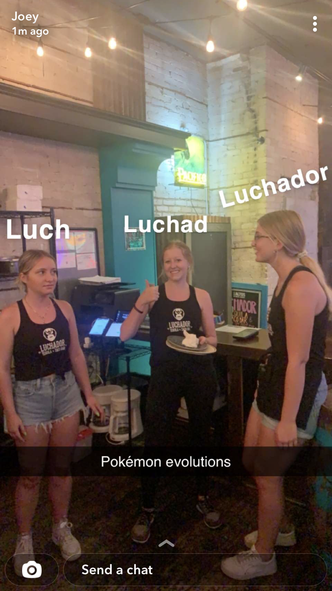
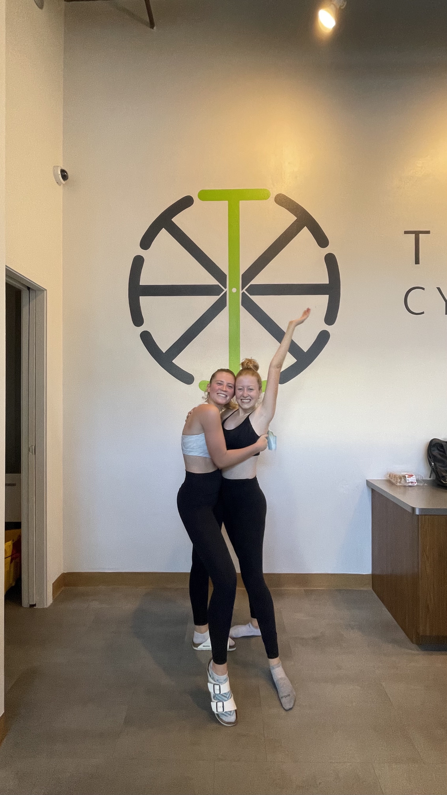
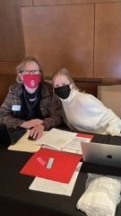

Luchador

In June of 2021, I began working at Luchador Taco and Tequila Bar. This has been a great experience as I have learned so much and met so many amazing people. I recently became a server after food running for three months. Serving is very fun but can become extremely stressful at times. I can't wait to see how much I improve over the next few months!
Turnstyle

What started as a way to hold myself accountable to work out has now turned into one of my favorite jobs. Turnstyle Madison is a beat based cycle studio that has become my second home, a new community, and an escape from life. I typically work two days a week, however, I try to cycle four times a week. This studio has completely changed my hatred towards working out and has given me a safe comfortable place to exhaust my energy.
College of Letters & Science

As if working at Luchador and Turnstyle isn't enough, I also work as the events and media specialist for the College of Letters & Science Student Academic Affairs Department. This position has allowed me to move forward towards my career and has allowed me to grow my event planning, graphic design, and media skills. We recently finished our L&S Scholarships Reception which was a huge success. I can't wait to see what else I can accomplish in this role!